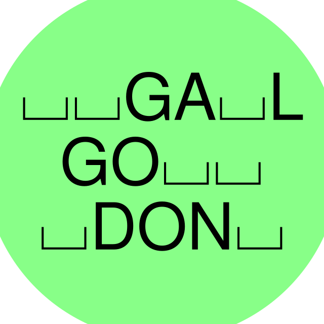

Diese Seite hilft Rätsel-Erstellern von "Galgodon", dem Galgenmännchen-Spiel im Fediverse, Posts mit dem aktuellen Spielstand und einer neuen Umfrage zu erstellen. (Code)
Selbstverständlich können die Posts für ein Rätsel statt mit dieser Seite auch "von Hand" erstellt werden. Man kann auch nur einen Teil dieser Seite verwenden, also nur den für den Spielstand oder nur den für die Umfrage.
Die meisten Eingabe-Felder zum Spielstand müssen nur zu Beginn eines Rätsels ausgefüllt werden. Nach jeder Abstimmungs-Runde muss dann nur noch das Feld "Anfang" neu geschrieben und das Feld "Bereits gewählte Buchstaben" ergänzt werden.
Die Spielstand-Daten werden vom Browser gespeichert und "überleben" daher das Schließen und erneute Öffnen dieser Seite.
Tipp: Man kann das Feld "Bereits gewählte Buchstaben" bereits am Anfang mit "äöüß" ausfüllen um mitzuteilen, dass nur die Buchstaben A-Z verwendet werden.
Wenn man sich die 4 Optionen für eine Umfrage überlegt, beginnt man manchmal mit den Buchstaben und manchmal mit den Antworten. Diese Seite versucht, beide Vorgehensweisen zu unterstützen.
Die letzten 4 Zeilen des Umfrage-Felds werden als die Antworten verwendet. Darin sollen die zugehörigen Buchstaben noch nicht durch Klammern markiert werden. Dies geschieht im nächsten Abschnitt.
Frage und Antworten stehen in einem gemeinsamen Textfeld, damit man sie z.B. leicht aus einer Datei mit vorbereiteten Umfragen kopieren kann.
Im Gegensatz zu den Spielstand-Daten werden die Umfrage-Daten nur für einen Post benötigt. Daher werden sie vom Browser nicht gespeichert und "überleben" das Schließen und erneute Öffnen dieser Seite nicht.
Die Zeichenzahl wird wie in Mastodon berechnet:
Die Berechnung ist jedoch nicht ganz kompatibel. Daher das "~".
Für den partiell gelösten Suchbegriff werden übrigens zwei spezielle Unicode-Zeichen verwendet:
Noch unbekannte Buchstaben werden als "⌴" (U+2334, counterbore) dargestellt. Dieses Zeichen steht eigentlich für eine Senkbohrung. Es hat sich aber herausgestellt, dass es in manchen Fonts besser lesbar ist als "␣" (U+2423, open box), welches ansonsten die natürlichere Wahl gewesen wäre.
Noch unbekannte Buchstaben wurden in diesem Spiel auch als "_" (Underscore) dargestellt. Weil aber mehrere Underscores eine durchgehende Linie bilden, konnte man die Buchstaben nicht gut durchzählen. Also wurden zwischen die Buchstaben und Underscores eines Worts Leerzeichen gesetzt. Wenn nun der Suchbegriff aus mehreren Worten bestand, wurden Wortzwischenräume entsprechend durch drei Leerzeichen dargestellt. Das war aber nicht auf allen Fedi-UIs unterscheidbar von den einzelnen Leerzeichen innerhalb der Wörter, wie im Folgenden beschrieben.
Leerzeichen im Suchbegriff werden durch " " (U+2003, em space) ersetzt. Dieses besonders breite Leerzeichen soll sicherstellen, dass Wort-Zwischenräume gut erkennbar sind.
In einer früheren Version wurden einfach mehrere "normale" Leerzeichen verwendet. Das hat in Mastodon gut funktioniert, aber in GoToSocial wurden mehrere aufeinander folgende Leerzeichen entsprechend dem Default-Verhalten von HTML wie ein einzelnes Leerzeichen dargestellt. Mittlerweile wurde das in GoToSocial behoben, aber vielleicht gibt es noch andere Fedi-UIs, in denen das Problem auftritt. Dort ist U+2003 wohl "robuster".
In den Antwort-Feldern können die farbig hinterlegten Buchstaben angeklickt werden, um sie der jeweiligen Option zuzuordnen. Das sind diejenigen Buchstaben, die noch nicht nicht in einer früheren Runde gewählt wurden. (Es kann jeweils nur das erste Vorkommen eines Buchstaben angeklickt werden.)
Die Farbe gibt an, ob der Buchstabe im Suchbegriff vorkommt: "Treffer" / "Niete"
Es kann schwierig sein, schmale Buchstaben wie i, I und l zu treffen. Dann kann der alphabetische Buchstaben-Block unten mit breiteren Buchstaben-Feldern verwendet werden. Diese haben die gleiche Funktionalität.
In den Buchstaben-Feldern links der Antworten können über die Tastatur ebenfalls Buchstaben zu den Optionen eingegeben werden. (Hier können auch Buchstaben eingegeben werden, die nicht in der Antwort vorkommen. Dies ist für den Fall gedacht, dass man zuerst die Buchstaben und danach die Antworten wählt.)
Die (nicht interaktive) Kopfzeile gibt einen Überblick über den "Status" der 30 Buchstaben:
Die Farbe gibt wieder an, ob der Buchstabe im Suchbegriff vorkommt: "Treffer" / "Niete"
Schon gewählte Buchstaben sind durchgestrichen (✗) und können in der neuen Umfrage nicht wieder angeboten werden.
Darunter steht die Häufigkeit der Buchstaben im Suchbegriff.
Im 4×30-Buchstaben-Block darunter sind diejenigen Buchstaben, die in der entsprechenden Antwort vorkommen und noch nicht gewählt wurden, farbig hinterlegt. Sie können durch Anklicken ausgewählt werden.
Es wäre praktisch, wenn man den neu erstellten Post auch direkt von hier aus absenden könnte. Aber:
Dazu müsste man sich bei seiner Fedi-Instanz authentifizieren. Das müsste nicht nur implementiert werden, sondern Ihr müsstet dieser Seite (und damit Github und mir) vertrauen, dass Euer Fedi-Login nicht missbraucht wird.
Im Gegensatz zur Kommunikation zwischen Fedi-Instanzen ist das API der Instanzen zu Client-Anwendungen nicht standardisiert. Ich könnte allenfalls bestimmte Fedi-Instanzen (z.B. Mastodon) unterstützen.